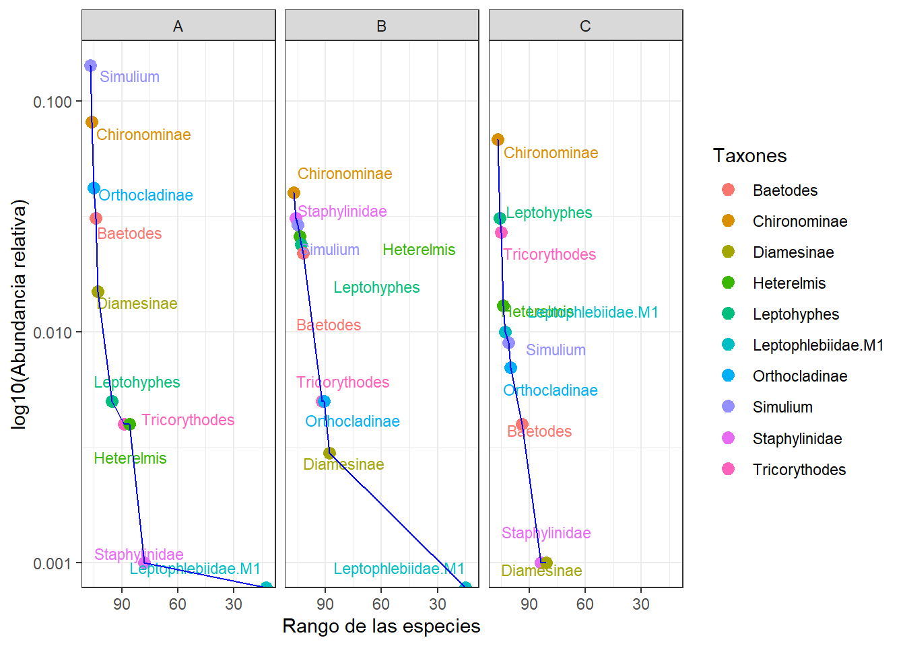
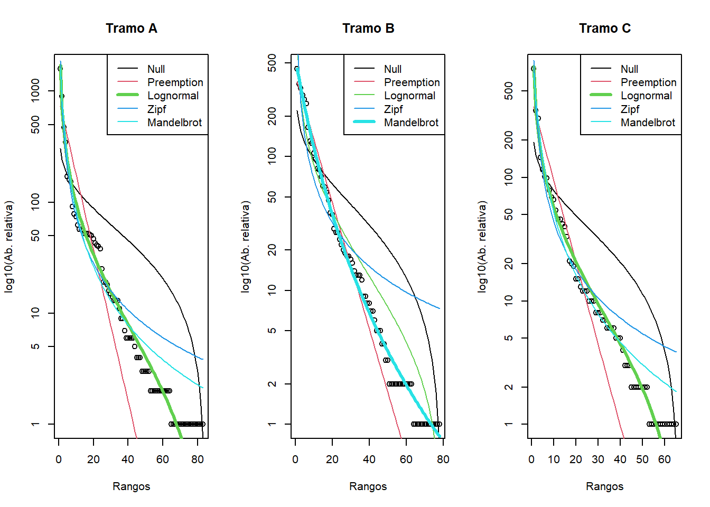
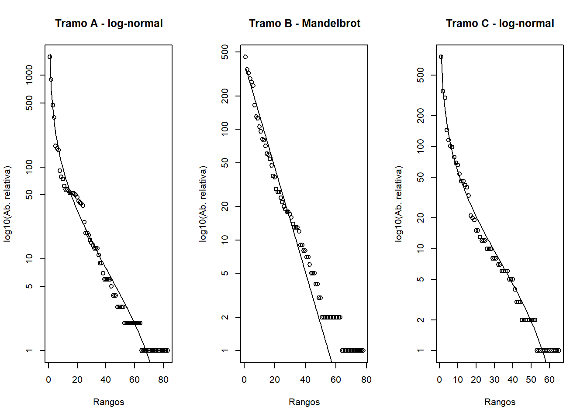
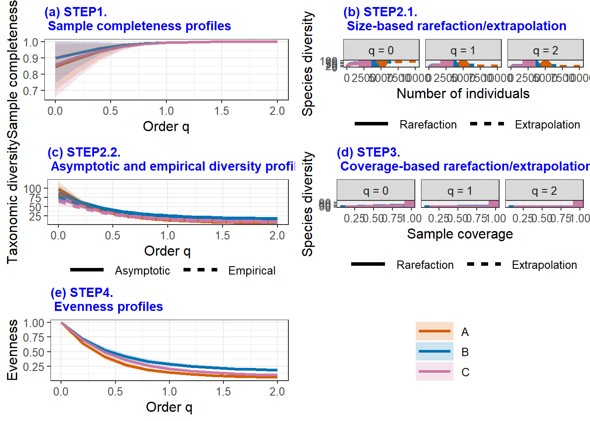
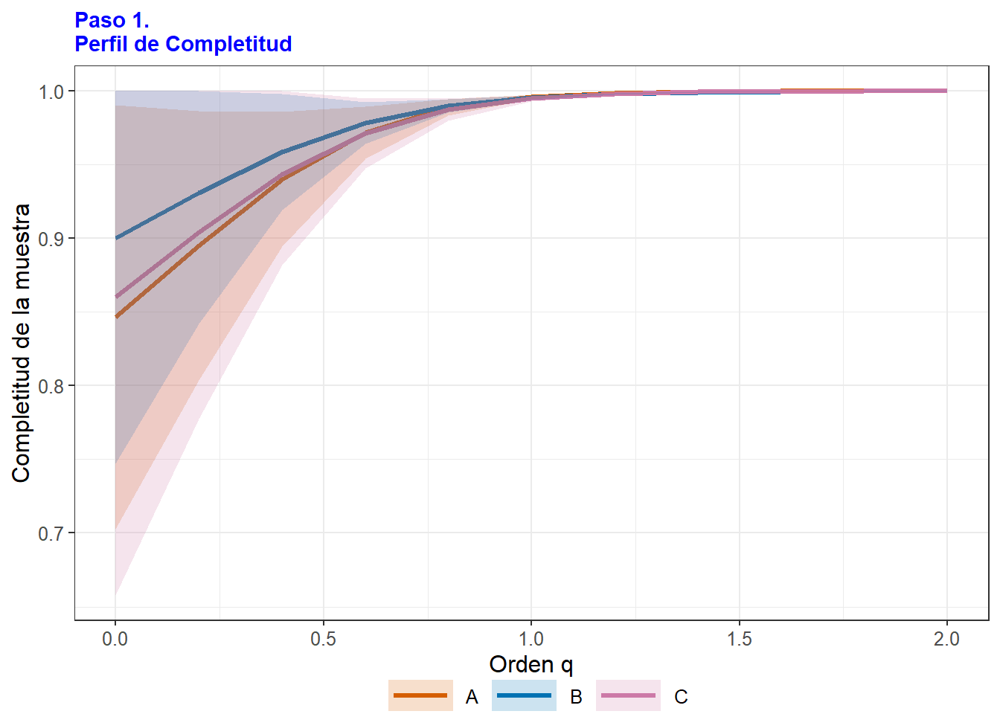
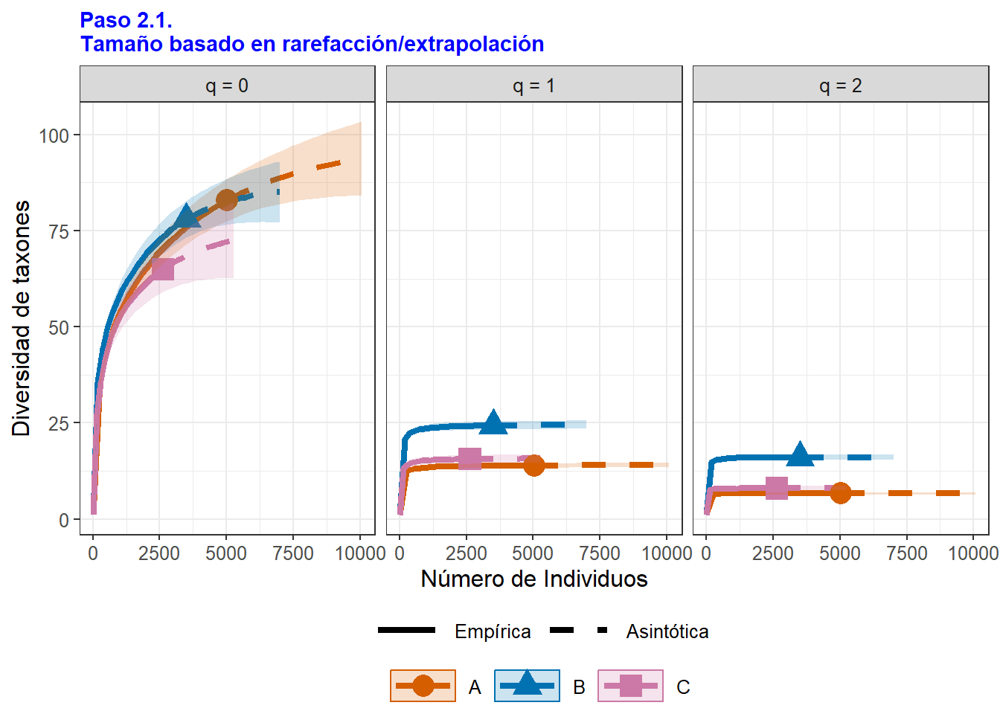
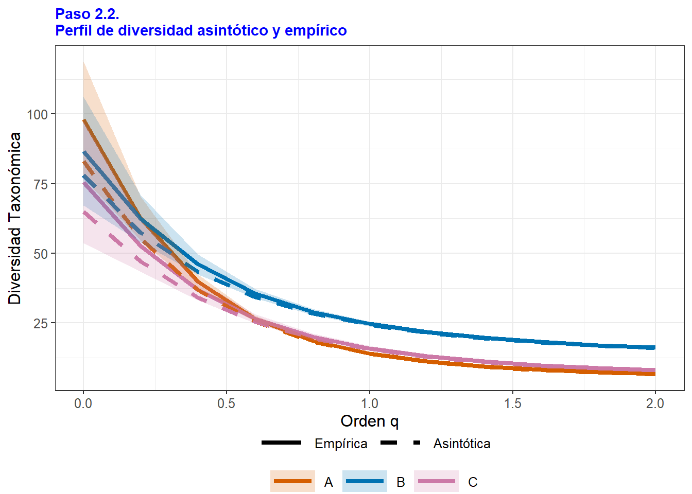
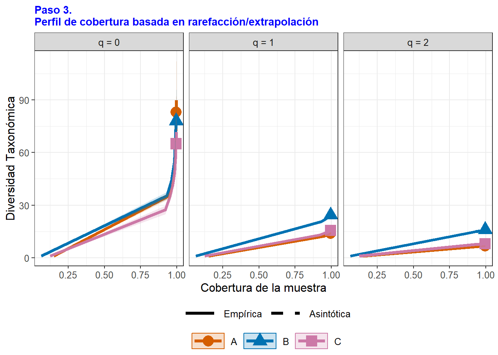
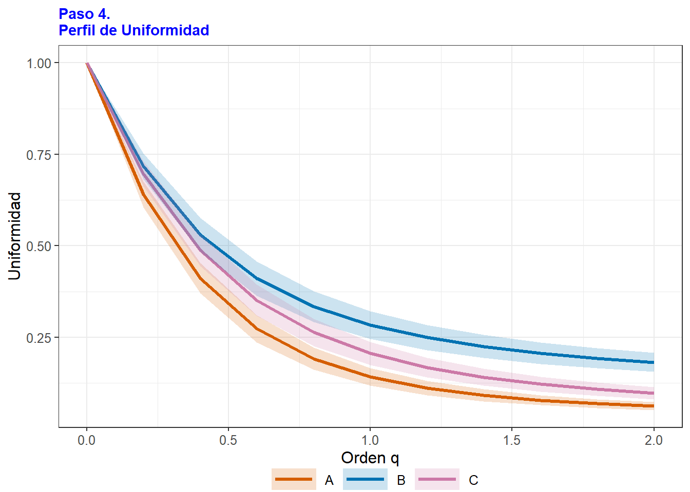
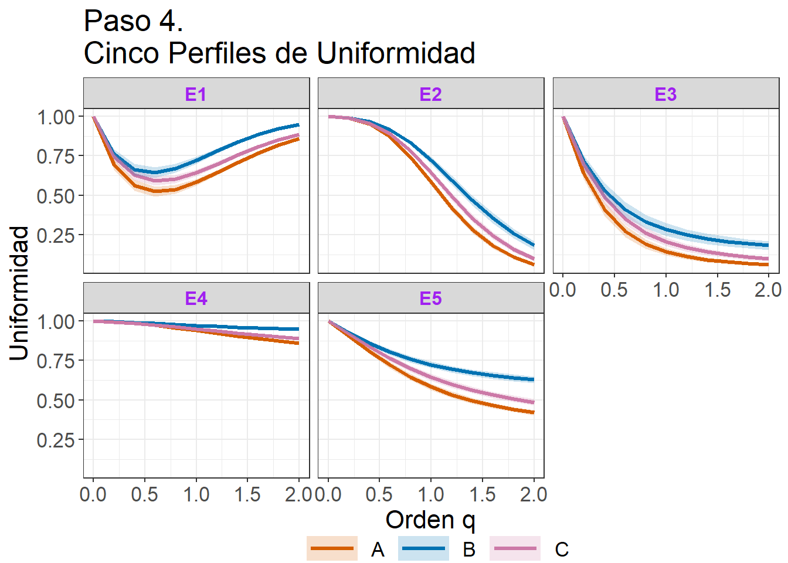

# Librerías para el tema 1 (perfil de diversidad)
# Aplicar el siguiente comando, en caso de no contar con las librerías instaladas
# install.packages(c("tidyverse","ggplot2","ggrepel","dplyr"))
library(tidyverse)
library(ggplot2)
library(ggrepel)
library(dplyr)Taller8. Diversidad Alfa
Introducción
Según Whittaker (1972) la diversidad en las comunidades ecológicas, se divide en componentes alfa, beta y gamma. La diversidad alfa se refiere al número de especies obtenidas en una muestra relativamente homogénea, tomada de una comunidad. La diversidad beta corresponde al grado de recambio o reemplazo de especies entre diferentes comunidades en una escala de paisaje, y la diversidad gamma se refiere al número de especies de un grupo de comunidades que integran uno o varios paisajes (diversidad regional) y es el resultado de la suma de las diversidades alfa y beta. Para el caso de la diversidad alfa, se pueden estimar tres formas de medirla: (1) la riqueza, (2) la equidad y (3) la diversidad.
(1) La riqueza (S o q=0), corresponde al número de especies en la muestra evaluada de la comunidad.
(2) La equidad (q=1, q=2), corresponde a la variación en las abundancias relativas de las especies, de la muestra tomada de la comunidad. Permite entender cómo se reparten los recursos las especies y por ello la forma en que cada una de ellas aporta individuos a la comunidad. Para este caso, los índices de Shannon-Weaber y de Simpson son los más utilizados. Debido a que este estimador incorpora tanto a los taxones como a su número de individuos, se considera a la equidad, como una medida menos sesgada que la riqueza para valorar (3) la diversidad en muestras tomadas de una comunidad.
(3) La diversidad, tiene diferentes formas de evaluarse y para este taller, será utilizada la propuesta de Chao et al (2020), basada en 4 pasos, a partir de los números efectivos de Hill (q=0, q=1, q=2), teniendo en cuenta la completitud de las muestras tomadas de la comunidad (paso 1), la diversidad asintótica: la estimada (asintótica) y la observada (empírica) (paso 2), la diversidad no asintótica: la interpolada y la extrapolada (paso 3) y el perfil de uniformidad de cada muestra (paso 4).
1.Estimadores de riqueza o número de especies (S o q=0). Si bien, es un estimador sencillo de calcular, lo más complejo es alcanzar el valor máximo que represente a la riqueza completa de taxones de la muestra o muestras de una comunidad, por lo cual, es una medida que depende del esfuerzo de muestreo (tamaño mínimo requerido en la muestra evaluada). Esto constituye un reto importante, para asegurar que los muestreos sean comparables en cuanto al número de individuos y de taxones o de especies censadas. La rarefacción utiliza estrategias de remuestreo, para corregir el número de especies o taxones, tomados de muestras de diferente tamaño.
2.Estimadores de equidad y de diversidad (q=1 y q=2). Para medir la diversidad de especies o de taxones de muestras tomadas de una comunidad, existen modelos paramétricos y no paramétricos. (1) Paramétricos, valoran el nivel de ajuste entre la riqueza de especies y sus abundancias de individuos, obtenida de las muestras (series logarítmica, log-normal, entre otras). (2) no Paramétricos, son estimadores de especies no detectadas (nuevas especies) a partir de las especies censadas.
Para el cálculo de estimadores paramétricos de diversidad, se utilizan (1) modelos de abundancia de especies, utilizando diagramas de rangos de abundancia, que relaicionan a las abundancias relativas en escalas logaritmicas (eje y) vs. los rangos de abundancias las especies (eje x) (Whittaker, 1965). Estos estimadores paramétricos se visualizan inicialmente con diagramas de rango-abundancia de Whittaker y su ajuste a modelos se evalúa con el comando radfit la librería vegan, que contiene algunos patrónes de diversidad como el Broken stick (vara quebrada), Preemtion, Log-normal, Zipf y Zipf-Mandelbrot.
(2) Los estimadores no paramétricos de diversidad se evaluarán con un análisis de completitud, asintóticos y no asintóticos, utilizando la librería iNEXT. Esto se basa en la propuesta de Chao et al. (2020), con la valoración de la diversidad de ensamblajes o muestras de comunidades, a partir de un procedimiento en cuatro (4) pasos y de los estimadores de Hill: q=0, q=1 y q=2.
Objetivo del taller.
Valoración de la diversidad de tres muestras (tramos) tomadas de del río Gaira - Santa Marta, correspondientes a tramos alto (A), medio (B) y bajo (C), mediante (1) estimadores paramétricos (diagramas y modelos de abundancia) y (2) de estimadores no paramétricos (números de Hill q=0, q=1 y q=2; curvas de completitud, asintóticas, no asintóticas y de uniformidad).
Referentes bibliográficos
Referentes bibliográficos de estimadores paramétricos
A Minimal Book Example (2019) Contiene información sobre estimadores de riqueza, de equidad y de diversidad de comunidades, con estimadores paramétricos y no paramétricos.
Laboratorio de Ecología de Comunidades: Biodiversidad (2019) Describe a paquetes y funciones de R para el análisis básico de la biodiversidad.
An extensive comparison of species-abundance distribution models - Baldridge et al. (2016) Comparativo en los modelos de distribución de abundancia de especies (SAD).
Herpetofaunal Species Abundance - Crane et al. (2018) Describe Modelos de rango - riqueza - abundancia (RAD), incluyendo curvas de Whittaker y análisis no asintóticos para anfibios y reptiles.
Referentes bibliográficos de estimadores no paramétricos (iNEXT)
Quantifying sample completeness and comparing diversities among assemblages - Chao et al. (2020) Describe el protocolo para la valoración de la diversidad verdadera (true diversity) en cuatro pasos.
Estimating diversity and entropy profiles via discovery rates of new species - Chao y Jost (2015) Valoración de la diversidad por perfiles de entropía y estimación de especies no detectadas.
A Quick Introduction to iNEXT via Examples - Hsieh et al (2022)
Ejercicio 1. Base de datos de macroinvertebrados acuáticos, tomados del río Gaira (2020)

Escarabajo buceador (Acilius sulcatus)
1. Valoración de diversidad a partir de estimadores paramétricos.
1.1 Diagramas de rangos de abundancia de Whittaker.
Para propósitos de este ejercicio se realizarán los diagramas con los diez (10) taxones de macroinvertebrados acuáticos más abundantes. Este diagrama permite hacer una exploración de los patrones de abundancia de los principales taxones de las muestras en comparación, como complemento a los modelos paraétricos a realizar.
Cargar las librerías
Paso 1. Cargar la base de datos “datos.csv”
La base de datos es entregada por el docente y a continuación se muestra el procedimiento para cargarla en RStudio y visualizar las seis primeras filas de las 107 en total, con el comando head(datos).
# Cargar la base de datos y asignarla como "datos"
datos <- read.csv2("datos.csv")
# print.Date(datos) # Muestra a toda la base de datos
head(datos) # head permite mostrar solo 6 filas de la base de datos (datos). TAXA A B C
1 Simulium 1586 323 99
2 Chironominae 901 451 756
3 Orthocladinae 473 54 79
4 Baetodes 346 248 42
5 Diamesinae 170 37 10
6 Atopsyche 159 18 1# View(datos)
Paso 2. Cargar la base de datos alargada “datos1”
El formato alargado se genera con la librería tidyverse. En los pasos posteriores se insertarán las columnas de rangos de abundancias (eje x) y de abundancias relativas (eje y).
# Datos en formato alargado (gather)
datos1 <- datos %>%
gather(key = Tramos, value = Abundancia, -TAXA)
# Rotulos de las columnas
colnames(datos1) <- c("Taxones", "Tramos", "Abundancia")
# seis primeras filas de la base de datos
head(datos1) Taxones Tramos Abundancia
1 Simulium A 1586
2 Chironominae A 901
3 Orthocladinae A 473
4 Baetodes A 346
5 Diamesinae A 170
6 Atopsyche A 159
Paso 3. Insertar una columna de “rangos” de abundancia - eje x
Los rangos de abundancia son requeridos para definir el eje x del diagrama a graficar.
# Rango de las especies para cada tramo (eje x de la figura)
# se inserta una columna "rango" que ranquea a las abundancias de c/spp
datos1$Rango <- ave(datos1$Abundancia, datos1$Tramos,
FUN = rank, ties.method = "min")
head(datos1) Taxones Tramos Abundancia Rango
1 Simulium A 1586 107
2 Chironominae A 901 106
3 Orthocladinae A 473 105
4 Baetodes A 346 104
5 Diamesinae A 170 103
6 Atopsyche A 159 102
Paso 4. Insertar una columna de “abundancias relativas” - eje y
# Abundancia relativa (Abundancia_rel) de los taxones para cada tramo
datos1$Abundancia_rel <- datos1$Abundancia / sum(datos1$Abundancia)
# Redondeo a tres decimales para resumir los valores de esta variable
datos1$Abundancia_rel <- round(datos1$Abundancia_rel,3)
# Filtrado de los datos de manera descendente por cada rango de abundancia
datos1 <- datos1[order(datos1$Rango, decreasing = TRUE), ]
head(datos1) Taxones Tramos Abundancia Rango Abundancia_rel
1 Simulium A 1586 107 0.142
109 Chironominae B 451 107 0.040
216 Chironominae C 756 107 0.068
2 Chironominae A 901 106 0.081
137 Staphylinidae B 347 106 0.031
227 Leptohyphes C 349 106 0.031
Paso 5. Filtrado de los 10 taxones más abundantes
En datos de diversidad como este que cuenta con más de 100 taxones, es recomendable resumirlos con algún criterio, para que el diagrama de ragos de abundancia sea facil de interpretar, para lo cual se realiza a continuación un filtrado de los 10 taxones más abundantes. En caso de que se quiera graficar a todos los taxones, se puede omitir este paso.
# Nombre de los 10 principales taxones por sus abundancias relativas
principales_taxones <- head(unique(datos1$Taxones), 10)
# Base de datos con 10 taxones de mayor abundancia relativa
datos_filtrados <- datos1 %>% filter(Taxones %in% principales_taxones)
head(datos_filtrados) # Tabla resumen de las 6 primeras filas Taxones Tramos Abundancia Rango Abundancia_rel
1 Simulium A 1586 107 0.142
2 Chironominae B 451 107 0.040
3 Chironominae C 756 107 0.068
4 Chironominae A 901 106 0.081
5 Staphylinidae B 347 106 0.031
6 Leptohyphes C 349 106 0.031
Paso 6. Figura de los 10 taxones más abundantes para cada tramo evaluado
ggplot(datos_filtrados,
aes(x = Rango, y = Abundancia_rel, color = Taxones, label = Taxones)) +
geom_point(size = 3) +
geom_text_repel(aes(label = Taxones), hjust = 1, vjust = 1.5, size = 3,
box.padding = 0.5, point.padding = 0.2, segment.color = NA) +
geom_line(color = "blue") +
scale_x_reverse() +
scale_y_log10() +
labs(x = "Rango de las especies",
y = "log10(Abundancia relativa)",
color = "Taxones") +
facet_wrap(~Tramos, nrow = 1) +
theme_bw()
1.2 Modelos de rango - riqueza - abundancia (RAD)
Son cuatro los modelos en los que se diagnostican los patrones de diversidad de cada muestra: nulo o de vara quebrada (brokenstick), geométrico o de preferencia (premption), log-normal, y los modelos lineales generalizados (glm) de taxones abundantes o dominantes son: los modelos logarítmicos o Zipf y Zipf-Mandelbrot.
Cargar las librerías
# Librerías para el tema 1 (perfil de diversidad)
library(vegan)
Paso 1. Cargar la base de datos “datos.csv”
La base de datos es entregada por el docente y a continuación se muestra el procedimiento para cargarla en RStudio y visualizar las seis primeras filas de las 107 en total, con el comando head(datos).
# Cargar la base de datos y asignarla como "datos"
datos <- read.csv2("datos.csv", row.names=1)
# print.Date(datos) # Muestra a toda la base de datos
head(datos) # head permite mostrar solo 6 filas de la base de datos (datos). A B C
Simulium 1586 323 99
Chironominae 901 451 756
Orthocladinae 473 54 79
Baetodes 346 248 42
Diamesinae 170 37 10
Atopsyche 159 18 1# View(datos)
Paso 2. modelos paramétricos
Modelos del tramo Alto - A. El comando radfit (ajuste de Modelos de rango - riqueza - abundancia - RAD), compara los modelos: Nulo (vara quebrada), Preemption, log-normal, Zipf y Mandelbrot. definiendo el mejor ajuste, utilizando los criterios de información de Akaike (AIC) y los Bayesianos o de Schwartz (BIC). Los modelos RAD que se ajustan mejor a los datos, son los que presenten menor AIC y BIC.
# Modelos paramétricos de rango - abndancia RAD
# Tramo Alto - A
mod.A <- radfit(datos[,1])
mod.A
RAD models, family poisson
No. of species 83, total abundance 5034
par1 par2 par3 Deviance AIC BIC
Null 6517.35 6849.02 6849.02
Preemption 0.14509 2232.51 2566.19 2568.61
Lognormal 1.938 2.1935 210.30 545.97 550.81
Zipf 0.37373 -1.4012 396.13 731.80 736.64
Mandelbrot 1.3859 -1.8252 1.2403 219.55 557.22 564.48# Tramo medio - B
mod.B <- radfit(datos[,2])
mod.B
RAD models, family poisson
No. of species 78, total abundance 3501
par1 par2 par3 Deviance AIC BIC
Null 1875.389 2197.150 2197.150
Preemption 0.10316 175.579 499.340 501.696
Lognormal 2.5739 1.6202 436.598 762.359 767.072
Zipf 0.23655 -1.0852 1027.269 1353.030 1357.743
Mandelbrot 5.8515e+05 -4.664 25.758 33.836 361.597 368.667# Tramo bajo - C
mod.C <- radfit(datos[,3])
mod.C
RAD models, family poisson
No. of species 65, total abundance 2632
par1 par2 par3 Deviance AIC BIC
Null 2212.106 2471.242 2471.242
Preemption 0.14177 703.178 964.315 966.489
Lognormal 2.0205 1.9231 57.541 320.677 325.026
Zipf 0.33661 -1.3027 216.532 479.669 484.017
Mandelbrot 2.6592 -1.9571 2.2373 82.897 348.033 354.556Los menores valores de los criterios AIC y BIC, definen al modelo lognormal como el que mejor se ajusta a los tramos A y C (modelo asociado a altos niveles de diversidad de taxones). De acuerdo a Ibañez et al. (2006), las distribuciones lognormales, aplican a comuniadades estables (sin perturbaciones) y/o a oportunistas.
Por su parte, el tramo B se ajusta mejor al modelo lineal generalizado (glm) Mandelbrot. De acuerdo a Alanís-Rodríguez et al. (2020), el ajuste Mandelbrot, se asocia a comunidades con algunos taxones que dominan por sus mayores densidades de indiviuos, especialmente en etapas iniciales de las sucesiones. Hay que tener en cuenta este aspecto del tramo B, porque si bien, se ajusta a un modelo con cierta dominancia de especies, es el lugar con mayor diversidad, en terminos de su mayor cobertura, equidad y uniformidad (ver a continuación: 2. Valoración de diversidad a partir de estimadores no paramétricos).
Paso 3. Figuras de los modelos paramétricos
par(mfcol=c(1,3))
plot(mod.A, main="Tramo A", ylab= "log10(Ab. relativa)", xlab="Rangos")
plot(mod.B, main="Tramo B", ylab= "log10(Ab. relativa)", xlab="Rangos")
plot(mod.C, main="Tramo C", ylab= "log10(Ab. relativa)", xlab="Rangos")
La línea de mayor grosor es la que representa al modelo de mayor ajuste para cada tramo evaluado. A continuación se grafican los diagramas de mayor ajuste.
par(mfcol=c(1,3))
plot(mod.A$models$Lognormal,
main="Tramo A - log-normal", ylab= "log10(Ab. relativa)", xlab="Rangos")
plot(mod.B$models$Preemption,
main="Tramo B - Mandelbrot", ylab= "log10(Ab. relativa)", xlab="Rangos")
plot(mod.C$models$Lognormal,
main="Tramo C - log-normal", ylab= "log10(Ab. relativa)", xlab="Rangos")
2. Valoración de diversidad a partir de estimadores no paramétricos.
3.Valoración de la diversidad en cuatro pasos, propuesta por Chao et al. (2020). Este ejercicio, tiene por objeto, aprender a utilizar la plataforma iNEXT de cuatro pasos iNEXT.4steps, el cual consiste en la valoración de la diversidad en localidades o muestras. Este procedimiento permite calcular los siguientes cuatro insumos: (1) la completitud o integridad de la muestra, (2) la diversidad asintótica, (3) la diversidad no asintótica y (4) la uniformidad de las abundancias (Chao et al. 2020).
Hay una plataforma generada por Chao y colaboradores Enlace de la Plataforma, pero en este caso se trabajará con los comandos de R con el paquete iNEXT.4steps, para calcular los estimadores de diversidad Enlace de los comandos de R.
¿Qué es iNEXT? Herramienta que infiere sobre la diversidad esperada de uno o más lugares, a partir de datos observados (tabulados de campo), por medio de interpolación (iN) y de extrapolación (EXT) de los datos de cada muestra tomada en campo. Los detalles se muestran en el artículo de Chao et al. 2020 (enlace), especialmente la tabla 2 y la plataforma de iNEXT en 4 pasos (enlace), que aplica a lo mencionado en el artículo.
A continuación se describen los cuatro pasos para valorar la diversidad de una o varias muestras tomadas de comunidades:
• Paso 1: Perfil de completitud. Muestra que tan completa es la muestra evaluada dependiendo de que la pendiente de la curva (eje y) se aproxime a cero para los tres órdenes de diversidad (eje x). Normalmente esa pendiente se estabiliza en los órdenes q= 1 (especies frecuentes o dominantes registradas) y q= 2 (especies muy frecuentes). No sucede lo mismo con el orden q= 0 (número de especies) donde la pendiente es mayor lo cual indica que el esfuerzo debe aumentar.
• Paso 2: Rarefacción y extrapolación y perfil asintótico de diversidad. El primero hace relación a la proyección de los órdenes q= 0, q= 1 y q= 2 (línea punteada), hasta el doble de los individuos observados (eje x). Normalmente en q=0 la curva punteada no alcanza a estabilizarse (pendiente =0), lo cual impide una estimación precisa de la diversidad verdadera. En caso de que lo anterior se estime con precisión, el perfil asintótico permitirá reportar la diversidad no detectada (perfil estimado - empírico u observado), de lo contrario se debe analizar el siguiente paso.
• Paso 3. Perfil no asintótico. Se aplica estandarizando coberturas, para muestras en las que no se puede estimar la diversidad con precisión. Se extrae una fracción de la muestra de forma aleatoria. Entonces se analiza el nivel de diversidad (eje y), para una cobertura máxima que tienda a 1 (eje x).
• Paso 4. Perfil de uniformidad. Permite evaluar la uniformidad en las abundancias de las especies registradas por las muestras comparadas para una cobertura máxima. Allí se sugiere a la plataforma iNEXT en 4 pasos (enlace) para ejecutar todo el análisis.
Objetivo Realizar los cuatro pasos para la valoración de la diversidad de taxones presentes en los tres sitios en comparación (A: Tramo alto, B: Tramo Medio, C: Tramo Bajo del río). Para más detalles de esta base de datos, se puede consultar a Rodríguez-Barrios et. al (2011)
Cargar librerías
Para poder ejecutar estas librerías, es recomendable utilizar la plataforma posit.cloud, debido a que el programa R instalado en el computador, puede presentar errores de instalación de estos complementos. Se requiere crear una cuenta en la página en mención.
## install the latest version from github
# install.packages('devtools')
library(devtools)
# install_github('AnneChao/iNEXT.3D')
library(iNEXT.3D)
# install_github('AnneChao/iNEXT.4steps')
library(iNEXT.4steps)
library(ggplot2)
Cargar la base de datos “datos.csv”
Esta base de datos será entregada por el docente, en el material correspondiente a la actividad de cómputo. El presente video muestra de una manera resumida, la forma de iniciar el trabajo en esta plataforma posit.cloud (anteriormente rstudio.clod) ver video. Realizar los pasos para cargar la base de datos, que para este caso es: datos.csv (entregada por el docente).
# Cargar la base de datos y asignarla como "datos"
datos <- read.csv2("datos.csv", row.names=1)
head(datos) # head permite mostrar solo 6 filas de la base de datos (datos). A B C
Simulium 1586 323 99
Chironominae 901 451 756
Orthocladinae 473 54 79
Baetodes 346 248 42
Diamesinae 170 37 10
Atopsyche 159 18 1La base de datos, también se puede cargar desde el icono “Import Dataset” ubicado a la derecha del panel de posit.cloud y seleccionar “From text (base)”
Con el siguiente resumen estadístico se definen las abundancias para cada sitio evaluado (Max.)
# Comparación de estadísticos de las muestras evaluadas (A, B y C)
summary(datos) A B C
Min. : 0.00 Min. : 0.00 Min. : 0.0
1st Qu.: 1.00 1st Qu.: 0.00 1st Qu.: 0.0
Median : 2.00 Median : 2.00 Median : 1.0
Mean : 47.05 Mean : 32.72 Mean : 24.6
3rd Qu.: 18.50 3rd Qu.: 18.50 3rd Qu.: 10.0
Max. :1586.00 Max. :451.00 Max. :756.0
2.1 Cuatro pasos para valorar la diversidad de los sitios en comparación
Resumen tabular de los cuatro pasos
A continuación se calcula la diversidad alfa en 4 pasos, de acuerdo a la propuesta de Chao et al. (2020). Este procedimiento puede tardar algunos minutos y dependerá de la velocidad de conexión a internet y al tamaño de la base de datos evaluada. diversity = "TD" corresponde a la diversidad taxonómica calculada. El comando names(result1), muestra a los diferentes insumos del análisis.
- Resultados resumidos. El comando
result1$summary, permite mostrar a todos los insumos tabulares de los 4 pasos del análisis de divversidad.
# Insumos tabulares de la diversidad en 4 pasos
library(iNEXT.4steps)
result1 <- iNEXT4steps(data = datos, diversity = "TD", datatype = "abundance")
result1$summary$`STEP1. Sample completeness profiles`
Assemblage q = 0 q = 1 q = 2
1 A 0.85 1 1
2 B 0.90 1 1
3 C 0.86 1 1
$`STEP2. Asymptotic analysis`
Assemblage Diversity Observed Estimator s.e. LCL UCL
1 A Species richness 83.00 98.04 10.02 83.00 117.68
2 A Shannon diversity 13.91 14.05 0.28 13.51 14.59
3 A Simpson diversity 6.66 6.66 0.14 6.38 6.95
4 B Species richness 78.00 86.65 8.03 78.00 102.38
5 B Shannon diversity 24.31 24.64 0.48 23.70 25.57
6 B Simpson diversity 16.03 16.10 0.39 15.34 16.86
7 C Species richness 65.00 75.56 11.32 65.00 97.74
8 C Shannon diversity 15.56 15.80 0.48 14.86 16.75
9 C Simpson diversity 7.97 7.99 0.27 7.46 8.52
$`STEP3. Non-asymptotic coverage-based rarefaction and extrapolation analysis`
Cmax = 0.999 q = 0 q = 1 q = 2
1 A 92.29 13.98 6.66
2 B 83.74 24.47 16.06
3 C 72.48 15.71 7.98
$`STEP4. Evenness among species abundances`
Pielou J' q = 1 q = 2
A 0.58 0.14 0.06
B 0.72 0.28 0.18
C 0.64 0.21 0.10Los cuatro pasos de este análisis se detallan a continuación.
Paso 1. Perfil de completitud
$STEP1. Sample completeness profiles, Perfil de completitud. Muestra que tan completa es cada muestra evaluada para los órdenes q= 0 (riqueza), q= 1 (especies frecuentes o abundantes), q= 2 (especies muy frecuentes o dominantes). Normalmente q=0 es de menor completitud (muestra insuficiente) debido a los f1 (cantidad de singletons), entre otros factores.
# Paso 1. Perfil de completitud
result1$summary$"STEP1. Sample completeness profiles" Assemblage q = 0 q = 1 q = 2
1 A 0.85 1 1
2 B 0.90 1 1
3 C 0.86 1 1Para este caso, solo q = 0 presenta una proporción < 1, los cual puede indicar que si se aumenta el esfuerzo de muestreo o el tamaño de la muestra, pueden encontrarse nuevos taxones.
Paso 2. Perfil asintótico
$STEP2. Asymptotic analysis, Perfil asintótico. Diversidad proyectada (estimada) asumiendo que las muestras tienen tamaño suficiente (coberturas superiores a 0.9), q= 0 (riqueza), q= 1 (especies frecuentes o diversidad de Shannon), q= 2 (especies muy frecuentes o diversidad de Simpson).
# Paso 2. Perfil Asintótico
result1$summary$"STEP2. Asymptotic analysis" Assemblage Diversity Observed Estimator s.e. LCL UCL
1 A Species richness 83.00 98.04 10.02 83.00 117.68
2 A Shannon diversity 13.91 14.05 0.28 13.51 14.59
3 A Simpson diversity 6.66 6.66 0.14 6.38 6.95
4 B Species richness 78.00 86.65 8.03 78.00 102.38
5 B Shannon diversity 24.31 24.64 0.48 23.70 25.57
6 B Simpson diversity 16.03 16.10 0.39 15.34 16.86
7 C Species richness 65.00 75.56 11.32 65.00 97.74
8 C Shannon diversity 15.56 15.80 0.48 14.86 16.75
9 C Simpson diversity 7.97 7.99 0.27 7.46 8.52La diferencia entre la diversidad estimada y la observada define al número de especies o taxones faltantes (no detectados). s.e. y LCL, son los errores estándar y los límites de confianza, respectivamente, para las proyecciones gráficas que se definen a continuación.
Paso 3. Perfil no asintótico basado en interpolación y extrapolación
$STEP3. Non-asymptotic coverage-based rarefaction and extrapolation analysis, Perfil no asintótico basado en interpolación y extrapolación. Cobertura (eje x) obtenida de una muestra aleatoria, extrapolada para aumentar su representación (Cmax).Este paso es apropiado cuando hay demasiados tazones no detectados o faltantes y la diversidad no se puede calcular con precisión.
# Paso 3. Perfil no asintótico basado en interpolación y extrapolación
result1$summary$"STEP3. Non-asymptotic coverage-based rarefaction and extrapolation analysis" Cmax = 0.999 q = 0 q = 1 q = 2
1 A 92.29 13.98 6.66
2 B 83.74 24.47 16.06
3 C 72.48 15.71 7.98Para este caso, el número de taxones de la muestra aleatoria q = 0, está entre 72 y 92. El número de taxones frecuentes q = 1 se encuentra entre 14 y 25 y el número de taxones muy frecuentes q = 2, está entre 7 y 16.
Paso 4. Perfil de uniformidad
$STEP4. Evenness among species abundances Perfil de uniformidad. Permite evaluar la uniformidad en las abundancias de los taxones por las muestras comparadas para una cobertura máxima. Sirve para comprar entre el patrón de uniformidad en las abundancias de los taxones para los dos lugares evaluados.
La Uniformidad (Evenness) se calcula mediante el índice de Piellou (J’), donde: J' = H/log(S), donde H denota la diversidad de Shannon y S es el número de taxones de la muestra.
# Paso 4. Perfil de uniformidad
result1$summary$"STEP4. Evenness among species abundances" Pielou J' q = 1 q = 2
A 0.58 0.14 0.06
B 0.72 0.28 0.18
C 0.64 0.21 0.10El anterior insumo indica que la uniformidad J' se mueve entre 58% y 64% (muestras poco uniformes en las abundancias de los taxones).
Insumos gráficos de los cuatro pasos
El comando figure[[6]] relaciona a las seis figuras que resumen el proceso de los cuatro pasos para valorar la diversidad de los tres sitios evaluados, descritos por Chao et al. 2020.
# Figuras generadas por los cuatro pasos de la valoración de la diversidad.
result1$figure[[6]]
Las figuras generadas se describen de forma individual en los siguientes comandos, permitiendo a su vez, editar los rótulos de sus ejes y los titulos de cada una, mejorando de esta forma su interpretación y presentación.
Figura del Paso 1. Completitud de las muestras
El comando Completeness, se utiliza para graficar la integridad de cada muestra (tramos a, B y C), a través del perfil de completitud. Para este caso se observa Que la muestra más completa es la del tramo medio (B), debido a que presenta menos pendiente en q = 0 que el resto. Entonces, a mayor pendiente, menos completitud de las muestras. Al analizar el eje X (q = 0, 1 y 2) se observa que la menor completitud se presenta en el orden q = 0, lo cual indica que hay taxones no detectados en las tres muestras evaluadas. Para eliminar el titulo de la figura, se puede colocar el siguiente comando title = "".
# Figura del paso 1. Completitud de las muestras.
p <- result1$figure[[1]]
p+labs(x="Orden q", y="Completitud de la muestra",
title = "Paso 1. \nPerfil de Completitud")
Otra forma de hallar el perfil de completitud es mediante el comando Completeness. La siguiente figura del paso 2, se obtiene con el comando ggCompleteness descrito en el repositorio GitHub de iNEXT.4steps (R package)
# Perfil de completitud de las muestras
# result2 <- Completeness(data = datos, datatype = "abundance")
# Figura del perfil de completitud
# p <- ggCompleteness(result2)
# p+labs(x="Orden q", y="Completitud de la muestra",
# title = "Paso 1. \nPerfil de Completitud")
Figura del Paso 2. Perfil asintótico
Paso 2.1 El comando result1$figure[[2]], permite graficar la “Diversidad asintótica” basada en rarefacción y extrapolación (paso 2.1). En este sentido la asintota de las curvas, se obtiene cuando por más que aumente la abundancia de individuos, no aumenta la diversidad (la curva se vuelve asintótica o con pendiente = 0). Estos perfiles son útiles para comparar la diversidad de muestras de diferentes tamaños y preferiblemente que sean grandes, lo cual no es el caso del presente ejercicio.
# Paso 2.1. Figura del tamaño basado en rarefacción / extrapolación
p <- result1$figure[[2]]
p + labs(x="Número de Individuos", y="Diversidad de taxones",
title = "Paso 2.1. \nTamaño basado en rarefacción/extrapolación") +
scale_linetype_manual("",values = c(1,2),labels=c("Empírica","Asintótica")) 
Para este caso, se observa que q = 0 (riqueza de taxones) no alcanza la asintota en ninguno de los tramos (líneas sólidas), tampoco al extrapolar la abundancia al doble de lo registrado (líneas punteadas), lo cual indica que se requiere aumentar el esfuerzo de muestreo o que los lugares tienen una elevada diversidad esperada. Otro aspecto es el solapamiento de las bandas de colores, que representan los valores de los límites de confianza, lo cual puede indicar que entre los tramos A y B no se esperan diferencias significativas de la riqueza de taxones (solapamiento importante de la bandas).
Con la librería iNEXT de R, también se puede realizar la figura anterior. Para mayores detalles de esta opción, se puede consultar al Manual_iNEXT y el procedimiento en esa plataforma se describe a continuación.
# library(iNEXT)
# out=iNEXT(datos,q=c(0,1,2),datatype="abundance")
# datos_plot = ggiNEXT(out, type=3, facet.var="Order.q")
# datos_plot + labs(x = "Cobertura de la muestra", y = "Diversidad")Paso 2.2 El comando result1$figure[[3]], permite graficar la “Diversidad asintótica” basada en el comparativo entre la diversidad estimada (asintótica) y la onservada (empírica) de los tramos en comparación (paso 2.2). En la Figura, se muestra que entre más se aproximen estas curvas, se tendrá una mayor aproximación a la diversidad esperada. Al analizar la intersección de los ejes x, y, se observa que en el orden q = 0 (riqueza de taxones) es donde se alejan las curvas, lo cual se complementa con la figura anterior, para este estimador.
# Paso 2.2. Figura del perfil asintótico y empírico
p <- result1$figure[[3]]
p+labs(x="Orden q", y="Diversidad Taxonómica",
title = "Paso 2.2. \nPerfil de diversidad asintótico y empírico") +
scale_linetype_manual("",values = c(1,2),labels=c("Empírica","Asintótica"))
Figura del Paso 3. Perfil no asintótico basado en interpolación y extrapolación
El comando result1$figure[[3]], permite graficar la “Diversidad no asintótica” basada en curvas de rarefacción y de extrapolación, asumiendo tamaños de muestra insuficiente o de muestras pequeñas, mediante la extracción de una submuestra del total evaluado (Cmax). En la Figura, todas las curvas alcanzan la cobbertuura esperada (Cobertura = 1), lo cual vuelve consistente su comparación. Para este caso se observa que la mayor riqueza de taxones se presenta en el tramo medio o B (panel q =0) seguido de los tramos B y C, respectivamente. Para el caso de los taxones abundantes (q = 1) y muy abundantes (q = 2), la mayor diversidad se presenta en el tramo B.
# Paso 3. Figura del perfil no asintótico basado en rarefacción/extrapolación
p <- result1$figure[[4]]
p+labs(x="Cobertura de la muestra", y="Diversidad Taxonómica",
title = "Paso 3. \nPerfil de cobertura basada en rarefacción/extrapolación") +
scale_linetype_manual("",values = c(1,2),labels=c("Empírica","Asintótica"))
Figura del Paso 4. Uniformidad de las muestras (tramos evaluados)
Este perfil, permite realizar un comparativo en la uniformidad de las muestras comparadas (tramos A, B y C), en los tres órdenes de diversidad (q = 0, 1 y 2), lo cual permite valorar la proporcionalidad de las abundancias para los diferentes taxones encontrados en cada lugar. Para este caso, a excepción del estimador q = 0 (en donde las tres curvas se unen), la mayor uniformidad se presenta en el tramo medio o B (curva de mayor magnitud y bandas de sus límites de confianza no se solapan con el resto), seguido de los tramos C y A, respectivamente.
# Paso 4. Figura del perfil de uniformidad
p <- result1$figure[[5]]
p+labs(x="Orden q", y="Uniformidad",
title = "Paso 4. \nPerfil de Uniformidad") 
Otra forma de calcular el perfil de uniformidad se realiza con el comando Evenness (Figura 6), de la librería iNEXT.4steps, en el cual, se relacionan cinco modelos de uniformidad (E1 a E5), desarrollados y descritos por Chao y Ricotta (2019). Ver tabla 1 y figura 2 del artículo.
# Cálculo de los cinco modelos de uniformidad
result3 <- Evenness(data = datos, datatype = "abundance")# Figura con los cinco modelos de uniformidad
p <- ggEvenness(result3)
p+labs(x="Orden q", y="Uniformidad",
title = "Paso 4. \nCinco Perfiles de Uniformidad") 
En la Figura se observa que para los cinco modelos de uniformidad, el tramo A es el que presenta mayor uniformidad, seguido del C y el B, respectivamente. La mayor uniformidad del tramo A se presenta especialmente para los taxones dominantes (q = 1) y muy dominantes (q = 2) (ver los órdenes de diversidad en el eje x). En el modelo E4, los valores de uniformidad son casi iguales para los taxones dominantes y muy dominantes (q = 0, 1 y 2).
Fuente de los cálculos
Chao, A., Y. Kubota, D. Zelený, C.-H. Chiu, C.-F. Li, B. Kusumoto, M. Yasuhara, S. Thorn, C.-L. Wei, M. J. Costello, and R. K. Colwell (2020). Quantifying sample completeness and comparing diversities among assemblages. Ecological Research, 35, 292-314.